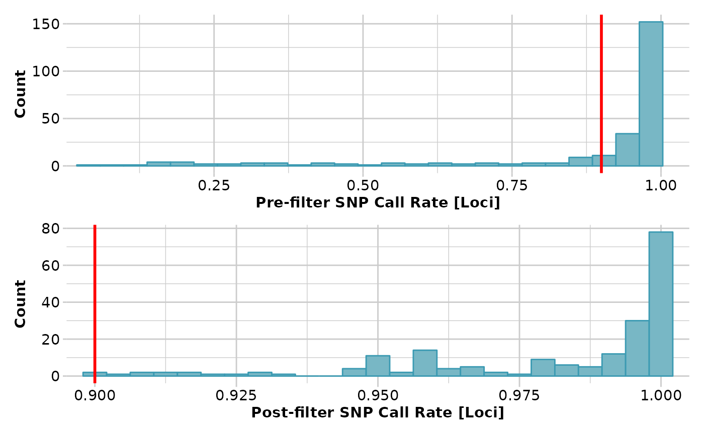
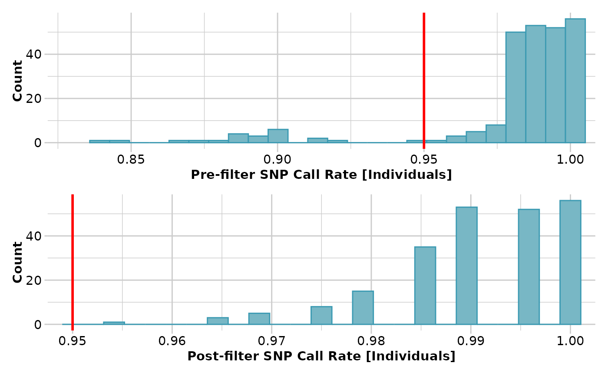

Prints history of a genlight object
gl.print.history(x = NULL, history = NULL)A genlight object (with history) [optional].
Either a link to a history slot (gl\@other$history), or a vector indicating which part of the history of x is used [c(1,3,4) uses the first, third and forth entry from x\@other$history]. If no history is provided the complete history of x is used (recreating the identical object x) [optional].
Prints a table with all history records. Currently the style cannot be changed.
# \donttest{
dartfile <- system.file('extdata','testset_SNPs_2Row.csv', package='dartR')
metadata <- system.file('extdata','testset_metadata.csv', package='dartR')
gl <- gl.read.dart(dartfile, ind.metafile = metadata, probar=FALSE)
#> Starting gl.read.dart
#> Starting utils.read.dart
#> Topskip not provided.
#> Setting topskip to 3 .
#> Reading in the SNP data
#> Detected 2 row format.
#> Number of rows per clone (should be only 2 s): 2
#> Added the following locus metrics:
#> AlleleID CloneID AlleleSequence SNP SnpPosition CallRate OneRatioRef OneRatioSnp TrimmedSequence FreqHomRef FreqHomSnp FreqHets PICRef PICSnp AvgPIC AvgCountRef AvgCountSnp RepAvg .
#> Recognised: 250 individuals and 255 SNPs in a 2 row format using /home/runner/work/_temp/Library/dartR/extdata/testset_SNPs_2Row.csv
#> Completed: utils.read.dart
#> Starting utils.dart2genlight
#> Starting conversion....
#> Format is 2 rows.
#> Please note conversion of bigger data sets will take some time!
#> Once finished, we recommend to save the object using save(object, file="object.rdata")
#> Adding individual metrics: /home/runner/work/_temp/Library/dartR/extdata/testset_metadata.csv .
#> Ids for individual metadata (at least a subset of) are matching!
#> Found 250 matching ids out of 250 ids provided in the ind.metadata file.
#> Added population assignments.
#> Added latlon data.
#> Added id to the other$ind.metrics slot.
#> Added pop to the other$ind.metrics slot.
#> Added lat to the other$ind.metrics slot.
#> Added lon to the other$ind.metrics slot.
#> Added sex to the other$ind.metrics slot.
#> Added maturity to the other$ind.metrics slot.
#> Completed: utils.dart2genlight
#> 250 rows and 255 columns of data read
#> Read depth calculated and added to the locus metrics
#> Minor Allele Frequency (MAF) calculated and added to the locus metrics
#> Recalculating locus metrics provided by DArT (optionally specified)
#> Starting gl.compliance.check
#> Processing genlight object with SNP data
#> Checking coding of SNPs
#> SNP data scored NA, 0, 1 or 2 confirmed
#> Checking locus metrics and flags
#> Recalculating locus metrics
#> Checking for monomorphic loci
#> Dataset contains monomorphic loci
#> Checking for loci with all missing data
#> No loci with all missing data detected
#> Checking whether individual names are unique.
#> Checking for individual metrics
#> Individual metrics confirmed
#> Checking for population assignments
#> Population assignments confirmed
#> Spelling of coordinates checked and changed if necessary to
#> lat/lon
#> Completed: gl.compliance.check
#> Completed: gl.read.dart
#>
gl2 <- gl.filter.callrate(gl, method='loc', threshold=0.9)
#> Starting gl.filter.callrate
#> Processing genlight object with SNP data
#> Warning: Data may include monomorphic loci in call rate
#> calculations for filtering
#> Recalculating Call Rate
#> Removing loci based on Call Rate, threshold = 0.9
#>

#> Completed: gl.filter.callrate
#>
gl3 <- gl.filter.callrate(gl2, method='ind', threshold=0.95)
#> Starting gl.filter.callrate
#> Processing genlight object with SNP data
#> Warning: Data may include monomorphic loci in call rate
#> calculations for filtering
#> Recalculating Call Rate
#> Removing individuals based on Call Rate, threshold = 0.95
#> Individuals deleted (CallRate <= 0.95 ):
#> AA032760[EmmacMDBMaci], AA019073[EmmacJohnWari], UC_00267[EmvicVictJasp], UC_00205[EmsubRopeMata], UC_00206[EmsubRopeMata], UC_00208[EmsubRopeMata], UC_00243[EmvicVictJasp], UC_00209[EmsubRopeMata], UC_00254[EmvicVictJasp], UC_00210[EmsubRopeMata], UC_00259[EmvicVictJasp], UC_00126c[EmvicVictJasp], AA063718[EmmacCoopAvin], AA063720[EmmacCoopAvin], AA063722[EmmacCoopAvin], AA063726[EmmacCoopAvin], AA063732[EmmacCoopAvin], AA063708[EmmacCoopAvin], AA063710[EmmacCoopAvin], AA063712[EmmacCoopAvin], AA063714[EmmacCoopAvin], AA063716[EmmacCoopAvin],

#> Note: Locus metrics not recalculated
#> Note: Resultant monomorphic loci not deleted
#> Completed: gl.filter.callrate
#>
#Now 'replay' part of the history 'onto' another genlight object
#bc.fil <- gl.play.history(gl.compliance.check(bandicoot.gl),
#history=gl3@other$history[c(2,3)], verbose=1)
#gl.print.history(bc.fil)
# }